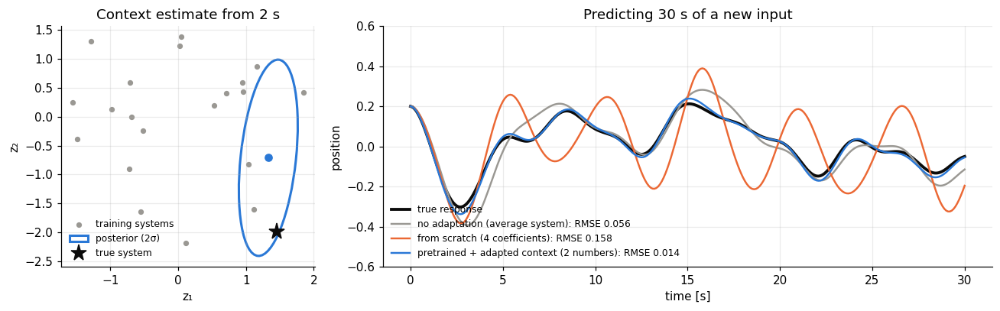

Engineers rarely meet a dynamical system that is completely new: a new motor resembles motors characterised before, a new robot joint behaves like other joints of the same series. This course is the author's own research on few-shot system identification, rebuilt as nine runnable chapters on a family of nonlinear oscillators small enough that every step, the pretraining, the adaptation, the experiment design, the failure mode, can be simulated, inspected and checked against ground truth in seconds.

Every chapter works with the same family of carts on a nonlinear spring, and the same rule: the learner chooses an input and reads a noisy position sensor, nothing else. Its model is deliberately missing two of the true system's effects, so no method here ever reaches zero error. Chapters 01-02 set the stage and the from-scratch baseline. Chapter 03 pretrains a two-number "family" from 20 other systems. Chapters 04-08 each ask what that shared knowledge buys: identification from little data, knowing when it's worth it, choosing the best experiment, noticing when it stops applying, and turning it into control. Chapter 09 maps every piece onto its counterpart at the scale of a real foundation model for dynamical systems.
Nothing here is asymptotic theory: every claim is a Monte Carlo comparison over freshly drawn systems, with the random baselines never selected by the criterion they're compared against, and every number quoted in a chapter is that chapter's own output.
Chapters 01-02 build the simulator and the from-scratch baseline every later idea has to beat. Chapter 03 is the hinge: it pretrains the low-dimensional family that chapters 04-08 all reuse, each rebuilding it deterministically from the same seed rather than depending on a saved file. Chapter 09 closes with a map from this toy problem to a real foundation model for dynamics.
Every chapter page shows the notebook with its outputs, so you can read the whole course here. To run and
change the code, download the course (the notebooks, the shared
dynutils.py helpers, and the requirements), then from its folder run:
pip install -r requirements.txt
jupyter lab # then open 01_the_system_and_what_we_can_measure.ipynbChapters 03-08 each rebuild the pretrained family from scratch in well under a second, using the same seed, so any chapter can also be run entirely on its own. The slowest chapters (06-08) take under a minute each; the whole course runs in a couple of minutes on a laptop. Every chapter ends with exercises, with solutions folded away.
Every system in this course is simulated, not measured: the "data" is generated by a known nonlinear plant with a hidden low-dimensional family structure, so every method can be checked against ground truth. This course is built from the author's own research tutorial repository on few-shot dynamical-system identification (MIT licensed); the course download includes the companion technical report, which derives every equation used here in full and discusses the open questions in chapter 09 at greater length.